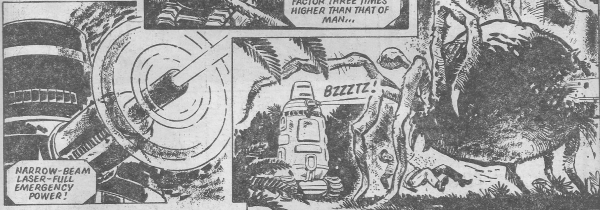

A Han Solo-ish rogue isn't as clever as he thinks in these rags-to-rags stories of galactic misadventure.
Art by Mike Dorey
| Story Title | Parts | Pages | w indicates a wraparound coverCovers | Year(s) | Issues | Writer | Artist | Colourist | Letterer |
|---|---|---|---|---|---|---|---|---|---|
From Tharg's Future Shocks Clever title: it's not "Trial and Error".Trail and Error | 1 | 5 | 0 | 1981 | 204 | Kelvin Gosnell | Mike Dorey | [b&w] | Peter Knight |
From Tharg's Future ShocksBlooming Cold | 1 | 5 | 0 | 1981 | 215 | Kelvin Gosnell | Garry Leach | [b&w] | Jack Potter |
From Tharg's Future ShocksJoe Black's Tall Tale | 1 | 2.5 | 0 | 1981 | Reprints: M‑365 (supplement)241 | Kelvin Gosnell | John Higgins | [b&w] | Tony Jacob |
From Tharg's Future ShocksHorn of Plenty: A Joe Black Story | 1 | 4 | 0 | 1982 | Reprints: 614 X27 248 | Kelvin Gosnell | John Higgins | [b&w] | Peter Knight |
Supertitled: "A Joe Black Adventure".The Hume Factor | 1 | 5 | 0 | 1982 | Reprints: M‑365 (supplement)252 | Kelvin Gosnell | John Higgins | [b&w] | Peter Knight |
From Tharg's Future ShocksJoe Black's Big Bunco | 1 | 5 | 0 | 1982 | Reprints: M‑365 (supplement)256 | Kelvin Gosnell | John Higgins | [b&w] | Bill Nuttall |
| year | episodes | pages |
| 1977 | 0 | 0 |
| 1978 | 0 | 0 |
| 1979 | 0 | 0 |
| 1980 | 0 | 0 |
| 1981 | 3 | 12.5 |
| 1982 | 3 | 14 |
| 1983 | 0 | 0 |
| 1984 | 0 | 0 |
| 1985 | 0 | 0 |
| 1986 | 0 | 0 |
| 1987 | 0 | 0 |
| 1988 | 0 | 0 |
| 1989 | 0 | 0 |
| 1990 | 0 | 0 |
| 1991 | 0 | 0 |
| 1992 | 0 | 0 |
| 1993 | 0 | 0 |
| 1994 | 0 | 0 |
| 1995 | 0 | 0 |
| 1996 | 0 | 0 |
| 1997 | 0 | 0 |